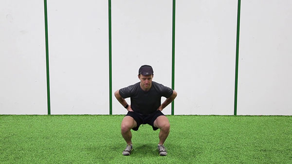
Vanliga squats utan vikt
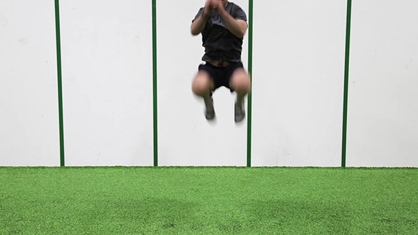
Jämnfota hopp upp och ner
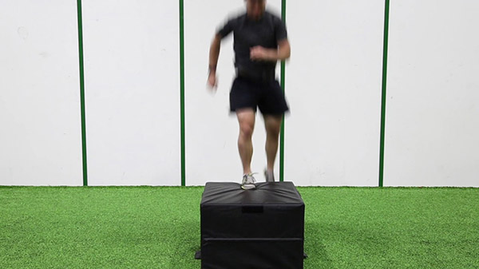
Utfallssteg upp på låda
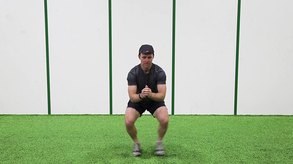
Fötterna ska röra sig snabbt i sidled, hoppa in och ut
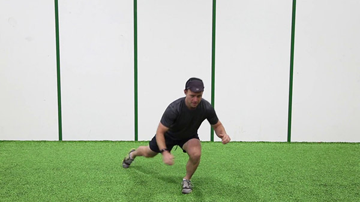
Knä till bröstkorgen
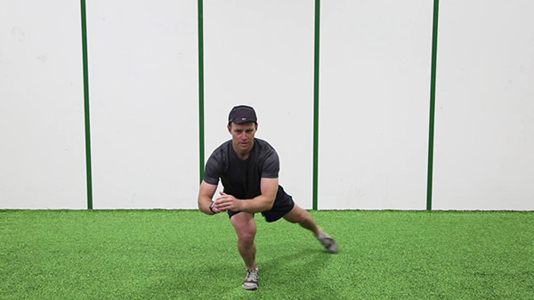
Benet ska gå ut i en cirekl och komma tillbaka in i startposition
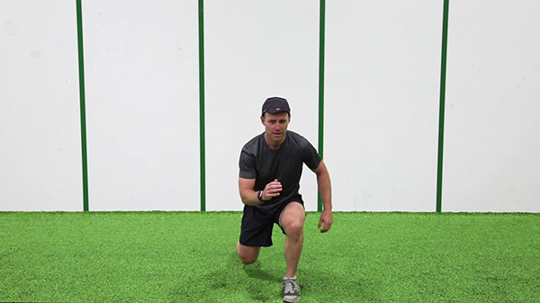
Snabba utfallssteg
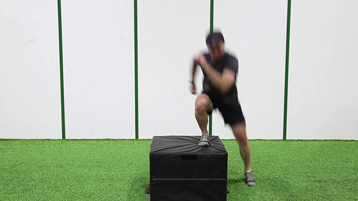
Sido hopp
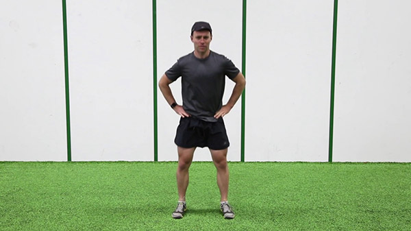
Snabba squats
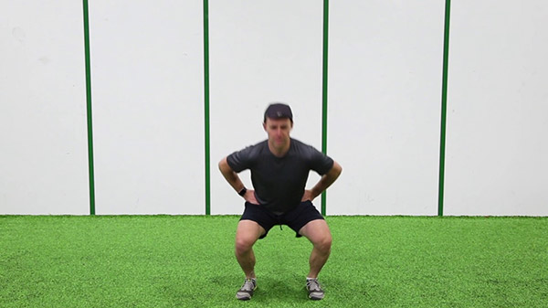
Squats där du håller positionen i 5 sekunder när du är i 90 graders vinkel
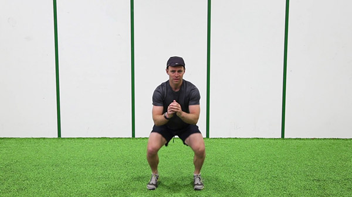
Hoppar på plats samma och små rörelser
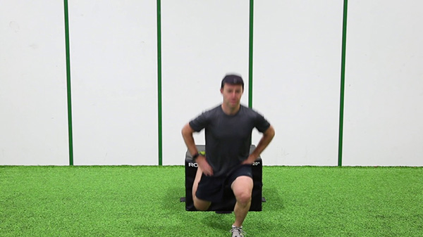
Squatar med ett ben medans det andra är uppe på lådan